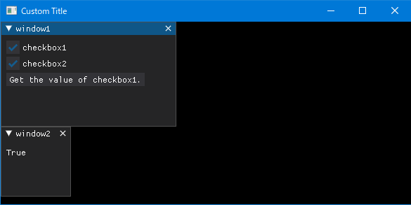

2nd January 2023 at 9:30pm
アイテムには関連する値（value）が作成されます。テキストの場合はそのテキストの内容、チェックボックスの場合は論理値（TrueかFalse）が入っています。
値の特徴しては以下の通りです。
dpg.get_value([タグ名])で値を取得することができます。dpg.set_value([タグ名])で値を設定することができます。- 同じタイプのアイテム同士は値を共有することができます。オプションは
, source=[タグ名]です。
下の例では、「window1」のボタンを押すと、「checkbox1」の値を取得して、「window2」にその値を表示します。
また、, source=[タグ名]を使って、「checkbox1」と「checkbox2」が連動しています。
# サンプルスクリプト8
import dearpygui.dearpygui as dpg
dpg.create_context()
dpg.create_viewport(title='Custom Title', width=600, height=300)
def button_callback(sender, app_data):
value = dpg.get_value("checkbox1")
dpg.set_value("text1", value)
with dpg.window(label="window1", width=250, height=150):
dpg.add_checkbox(label="checkbox1", tag="checkbox1")
dpg.add_checkbox(label="checkbox2", source="checkbox1")
dpg.add_button(label="Get the value of checkbox1.", callback=button_callback)
with dpg.window(label="window2", pos=(0,150)):
dpg.add_text("***", tag="text1")
dpg.setup_dearpygui()
dpg.show_viewport()
dpg.start_dearpygui()
dpg.destroy_context()

Dear PyGui内で使用する値を設定することができます。「値」アイテムは、値（value）レジストリに追加することで利用することができます。
以下のコマンドで値を追加することができます。
- dpg.add_bool_value
- dpg.add_color_value
- dpg.add_double_value
- dpg.add_double4_value
- dpg.add_float_value
- dpg.add_float4_value
- dpg.add_float_vect_value
- dpg.add_int_value
- dpg.add_int4_value
- dpg.add_series_value
- dpg.add_string_value
サンプルスクリプト8の「text1」の値を上の方法を使って設定してみます。
# サンプルスクリプト9
import dearpygui.dearpygui as dpg
dpg.create_context()
dpg.create_viewport(title='Custom Title', width=600, height=300)
def button_callback(sender, app_data):
value = dpg.get_value("checkbox1")
dpg.set_value("string_value", value) #「text1」では無く、「string_value」にセットします。
with dpg.value_registry(): #「value_registry」もコンテナータイプのアイテムです。
dpg.add_string_value(default_value="default_value", tag="string_value")
with dpg.window(label="window1", width=250, height=150):
dpg.add_checkbox(label="checkbox1", tag="checkbox1")
dpg.add_checkbox(label="checkbox2", source="checkbox1")
dpg.add_button(label="Get the value of checkbox1.", callback=button_callback)
with dpg.window(label="window2", pos=(0,150)):
dpg.add_text(tag="text1", source="string_value") #「string_value」を共有しています。
dpg.setup_dearpygui()
dpg.show_viewport()
dpg.start_dearpygui()
dpg.destroy_context()ここまで分かれば、コンソールを介さず値を表示することができます。